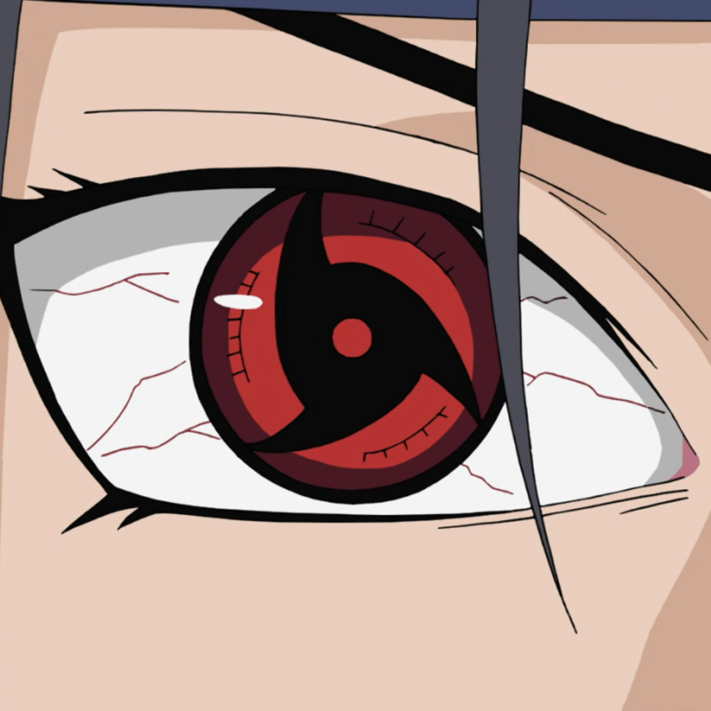
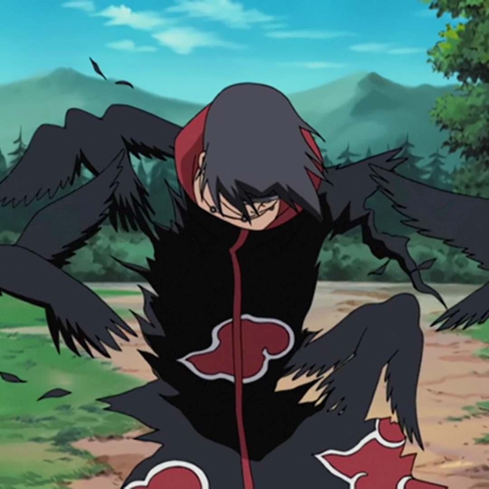

Sharingan-A visual ability that allows the user to perceive and predict movements.
Susanoo-A massive warrior spirit that acts as a powerful shield and weapon.

Crow Clone-Itachi could summon crows, which he would typically call forth in flocks to swarm opponents and distract them.